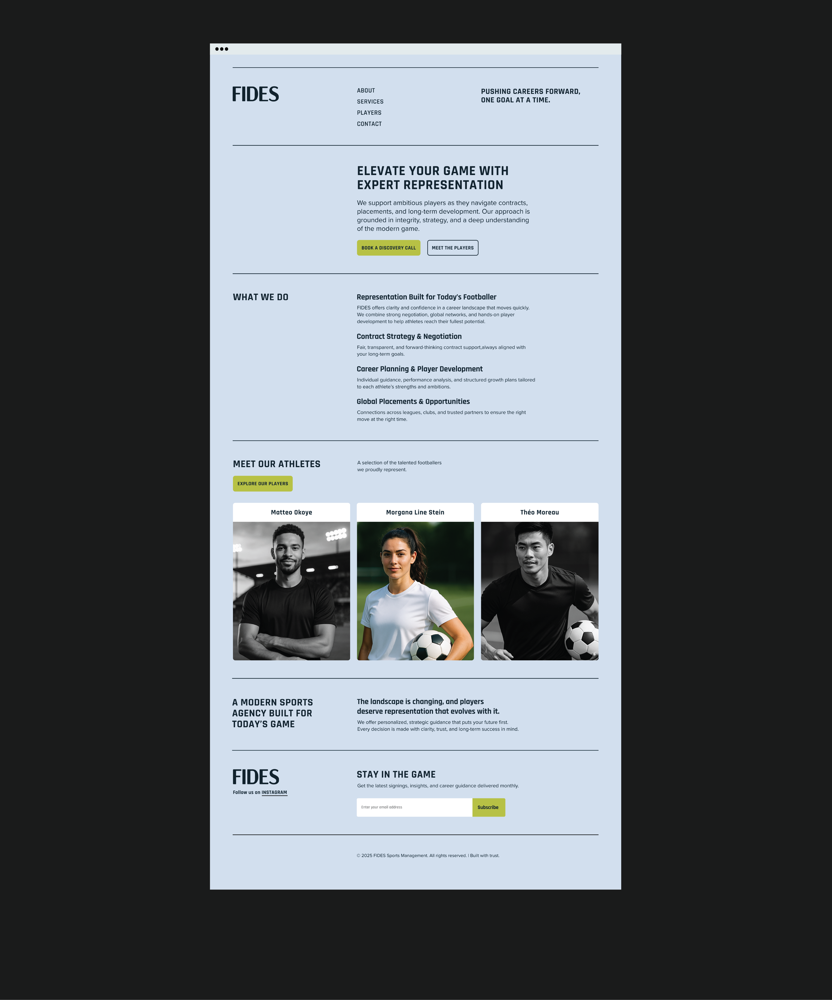
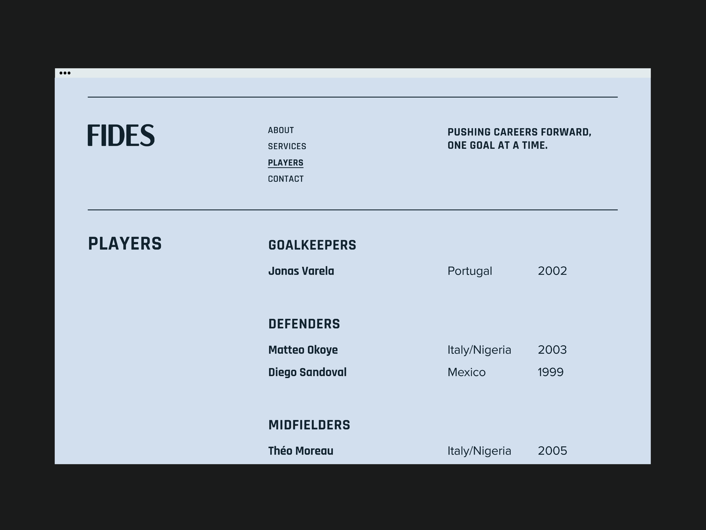

Web Design · UI/UX · 2023
FIDES
Building a credible, premium digital presence from scratch for a sports management agency whose only asset at the start was the integrity of its founders.

Building a credible, premium digital presence from scratch for a sports management agency whose only asset at the start was the integrity of its founders.
When the founders of FIDES approached me, they had no website, no formal visual language, and only a loose sense of how they wanted to present themselves. What they did have was a clear set of values: trust, long-term development, and a genuine commitment to the players they represent.
The problem was translating that into a digital presence that could hold its own against established agencies. A football scout, a club director, or a player's family lands on the site and makes a decision in seconds. The design had to make that decision easy — not by overselling, but by communicating maturity and structure from the first scroll.
Design challenge: How do you build institutional credibility for an agency that has none yet — using only design, content structure, and visual language?
The temptation for a new agency is to overdesign — to use bold imagery, dense content, and flashy treatment to compensate for a short track record. Research into how clubs and scouts actually evaluate agencies pointed in the opposite direction. The sites they trusted most were calm, structured, and easy to navigate. Nothing was fighting for attention.
This became the foundation of the FIDES design strategy. Minimalism wasn't a style choice — it was a credibility signal. A site that doesn't try too hard communicates confidence. The content can speak because the design gets out of the way.
Home
Clear positioning and immediate pathways to every section.
About
Story, mission, approach, and the values behind the agency.
Players
A structured roster designed for fast scanning by clubs and scouts.
Services
Transparent detail on exactly what the agency offers and how.
Every page follows a single predictable structure: what we do → why it matters → proof → action. This mirrors how users actually evaluate agencies — and it removes the need to search for information that should be obvious.
The Players page uses position-based grouping and a three-column grid with name, nationality, and year of birth visible at a glance. This matches the mental model of the primary users — football scouts and club administrators who scan rather than read.
Rather than relying on dramatic photography or complex visual treatments, the site uses typographic hierarchy, whitespace, and a tight grid to communicate quality. This also made the site more scalable — new content fits the system without requiring bespoke visual treatment.



A digital presence that looks like an agency that has been doing this for years.
The redesign gave FIDES a site that immediately communicates the professionalism the founders bring to their work with athletes. The information architecture now mirrors how users evaluate agencies — making every decision faster, from reviewing services to scanning the roster.
The typography and grid system is built to scale as the agency grows. New players, services, and content can be added without rebuilding the design — the system accommodates expansion while maintaining the restraint that makes it credible.
Working with a client who had no existing visual language forced a discipline I value: designing from principles rather than precedent. Every decision had to be justified on its own terms — not by reference to what they'd done before, but by what would actually serve their users.
The project also surfaced something I didn't fully anticipate: on a content-forward site, copy quality and design quality are inseparable. The restrained visual system exposed weak copy rather than hiding it, which meant the most valuable design work happened in the content strategy sessions, not Figma.